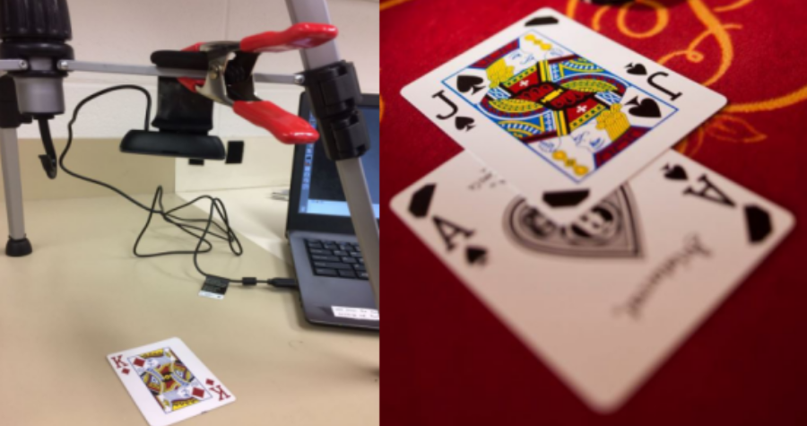
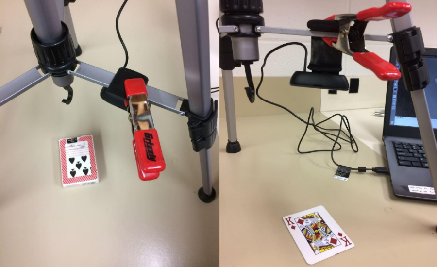
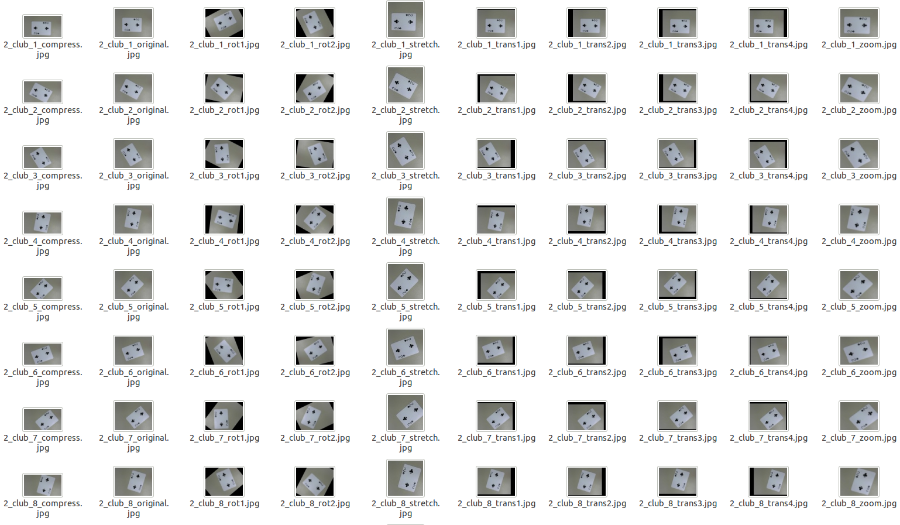

The goal of our project is to classify cards for a game of Blackjack in real time. Given an image of a card, can the computer correctly identify it? (Ace, 2-10, Jack, Queen, King).
This task explores the idea of object recognition, a tool that is being used more and more in fields, such as self-driving cars and pick/place and sorting robots. Object recognition can provide more information for computers to make decisions on by being able to tell apart a red balloon to a stop sign, or a bottle of gatorade from dish soap.
The challenge for a computer to classify these cards comes in trying to recognize these features of the cards, and being able to interpret these features correctly. Each of the cards are unique enough that it can be a challenge for a computer to try and classify them all.
In the project, we used K-Nearest Neighbor (KNN, k = 5), Support Vector Machine (SVM, linear kernel), and Neural Net (NN, 15 Layers) algorithms from Scikit-learn and Convolutional Neural Net (CNN) algorithms from the tflearn package to achieve the goal. 10-fold cross validation was used to verify the accuracy of the models we generated.
Fig.1 Can the computer correctly identify the card in real time?
Dataset: We obtained the images by taking pictures of each card with an outer webcam fixed at a constant height and labeled them with different file name.
Fig.2 Camera was mounted on a tripod to get pictures of cards.
The original dataset contained 1040 images of one decks of 52 cards (Ace = 1, 2 ~ 10, Jack = 11, Queen = 12, and King = 13). Each card has 20 pictures with the same background in different orientation.
To explore the feature set and increase the accuracy when classifying the cards, we applied data augmentation (translations, rotations, scaling, zooming, stretching and compressing) to each image in the original dataset, thus expanded the dataset to 10400 images(10 augments per image).
Fig.3 After data augmentation, the dataset has been expanded to 10400 images.
Approach: The learners in the project are 5-Nearest Neighbor, Support Vector Machine, 15-Layer Neural Net algorithm from Scikit-Learn and Convolutional Neural Net algorithm(CNN) from tflearn packages. The feature used for CNN is convolutional features, while features for other algorithms is Dense SIFT (DSIFT), a computer vision tool used to detect objects in an image. 10-fold cross validation is used to verify the accuracy of the model.
Fig.4 Computer recognized different cards in real time.
With the augmented data set, the accuracy of SVM and CNN algorithms increased significantly. The best model we obtained has an accuracy of 98.31% with the CNN algorithm which uses 2 layers with 250 neurons.